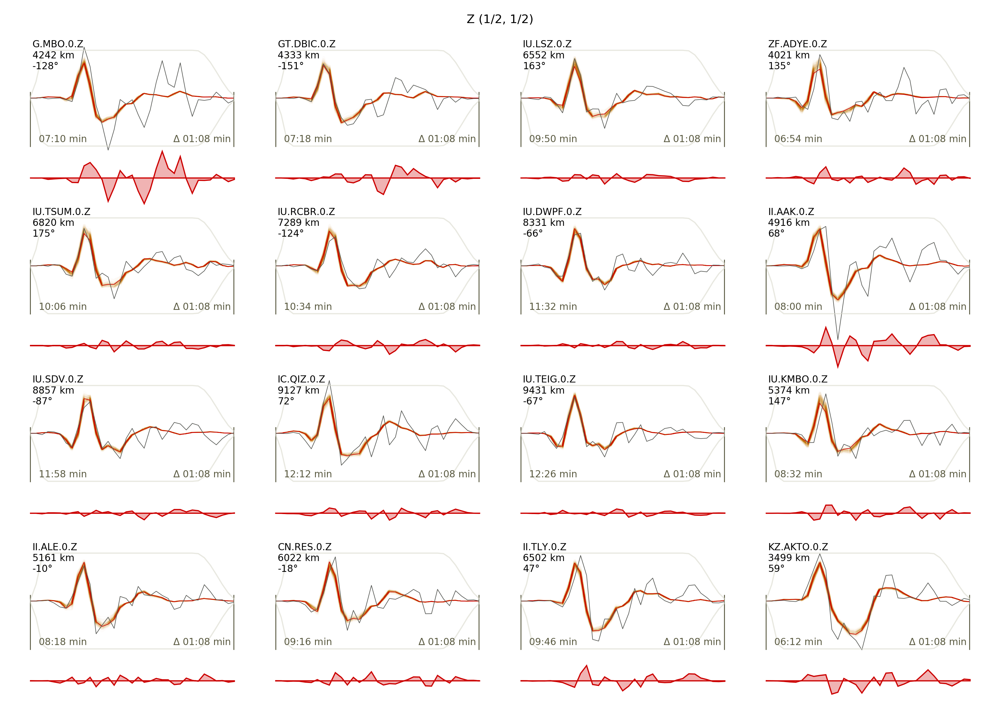
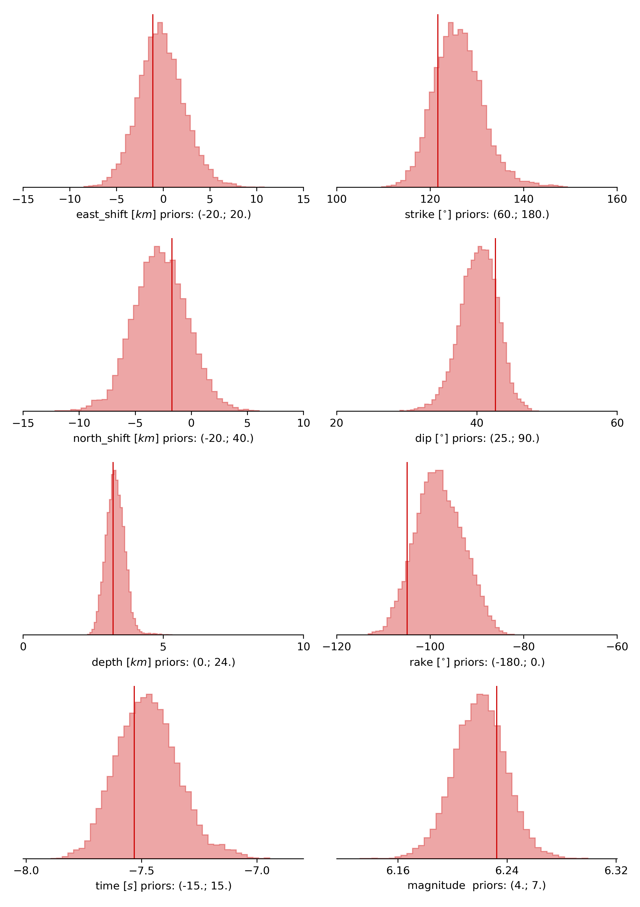
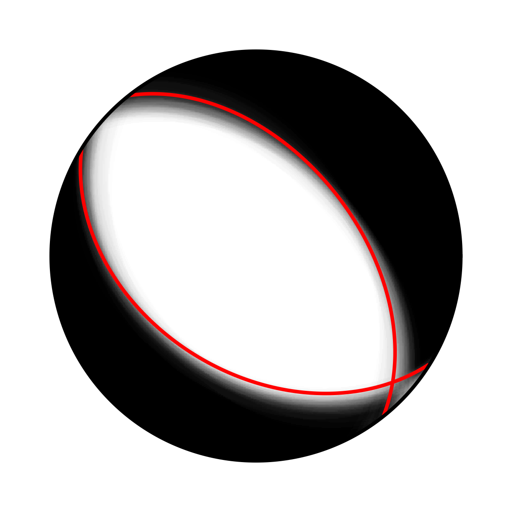

Example 2: Teleseismic Double Couple¶
Clone project¶
In this example we will use real teleseismic data from the Mw6.3 2009 L’Aquila earthquake and sample the solution space of a double-couple moment tensor. The dataset consists of 35 seismic stations within teleseismic distances (between 4000 and 10000 km) with respect to the origin of the reference event. To copy the example (including the data) to a directory outside of the package source directory, please edit the ‘model path’ (referred to as $beat_models now on) to your preference path and execute:
cd /path/to/beat/data/examples/
beat clone dc_teleseismic /'model path'/Laquila_dc --copy_data --datatypes=seismic --source_type=DCSource --sampler=PT
This will create a BEAT project directory named ‘Laquila_dc’ with a configuration file (config_geometry.yaml) and real example data (seismic_data.pkl). This directory is going to be referred to as ‘$project_directory’ in the following.
We assume that the reader is familiar with the setup of Example 1 beforehand.
Download Greens Functions¶
For this example, we will need a global Greens function store with a source-receiver setup suitable for teleseismic distances. As such a global store can be potentially very hard-disc space expensive we will limit the possible source locations to a maximum depth of 25 km and we limit the sampling rate to a sensible 0.5 Hz (or 2s) and the spatial sampling to 4 km in depth and distance.
We will download the Greens function store (approximately 2.6 GB in size) from the pyrocko project Greens Mill repository with the following commands:
cd $GF_path
fomosto download kinherd global_2s_25km
Please make sure that the store_superdir attribute under seismic_config.gf_config in the configuration file (config_geometry.yaml) is set to match your $GF_path.:
store_superdir: $GF_path
Alternatively, we could also calculate the Greens function (GF) store ourselves, as done in Example 1 the regional Full Moment Tensor example. Please note that creating such a store is computationally expensive.
How to convert Green’s Mill store to beat format¶
We now have to change the downloaded Greens function meta info into beat compatible formalism. For that we need to change the name of the Greens function store by:
mv $GF_path/global_2s_25km $GF_path/global_2s_25km_ak135_0.500Hz_0
To enable velocity model uncertainty perturbation each store is named after the earthmodel used, followed by the sampling rate and the reference model index, each separated by a ‘_’ The format is %station_%earth_model_name_%sampling_%reference_model_idx. %station is defined in the reference_location of the gf_config section of the config_geometry.yaml as “global_2s_25km”.:
reference_location: !beat.heart.ReferenceLocation
lat: 54.47458
lon: -117.23484
depth: 0.0
station: global_2s_25km
We now also want to change the tabulated phases in the store.
Open the store config under $GF_path/global_2s_25km_ak135_0.500Hz_0/config with any editor. Change the name of the store from:
id: global_2s_25km
to:
id: global_2s_25km_ak135_0.500Hz_0
The config shows the tabulated phases in the store:
tabulated_phases:
- !pyrocko.gf.meta.TPDef
id: begin
definition: p,P,p\,P\,Pv_(cmb)p
- !pyrocko.gf.meta.TPDef
id: end
definition: '2.5'
- !pyrocko.gf.meta.TPDef
id: P
definition: '!P'
- !pyrocko.gf.meta.TPDef
id: S
definition: '!S'
- !pyrocko.gf.meta.TPDef
id: p
definition: '!p'
- !pyrocko.gf.meta.TPDef
id: s
definition: '!s'
These phases are specific and for the P-phase for example only the direct P-phase will be considered for first arrivals. However, in some cases a non direct P-phase can be the first arrival. We want to replace those phases a custom phase arrival, ‘any_P’, which will default to any first P-type phase arriving of any kind. Replace the phases with:
tabulated_phases:
- !pf.TPDef
id: any_P
definition: p,P,p\,P\
- !pf.TPDef
id: slowest
definition: '0.8'
With the following command we calculate and tabulate all phase arrival times in the distances of the GF store for these phases:
fomosto ttt global_2s_25km_ak135_0.500Hz_0 --force
This should only take a minute. We are now set to use the Greens function store in BEAT without heavy Greens function calculation on our desktop!
Data windowing and optimization setup¶
The seismic phases (in this example only the P phase), their bandpass-filter and taper are defined under ‘waveforms’ in the $project_directory/config_geometry.yaml:
- !beat.WaveformFitConfig
include: true
preprocess_data: true
name: any_P
channels: [Z]
filterer: !beat.heart.Filter
lower_corner: 0.01
upper_corner: 0.2
order: 4
distances: [30.0, 90.0]
interpolation: multilinear
arrival_taper: !beat.heart.ArrivalTaper
a: -15.0
b: -10.0
c: 40.0
d: 55.0
In this case we want to optimize the entire P-phase up to 0.2 Hz, with a taper from 15s before to 55s after the P-wave onset. Different filters and arrival time windows maybe defined as well. These parameters are all fine for this case here! Please note that the downloaded (or calculated) Greens function store has a Nyquist frequency of 0.25 Hz and is only valid for sources up to 25 km depth.
For P-waves one would like to use the Z (vertical) component.
Sample the solution space¶
As a first step we fix the source parameters to some random value and only optimize for the noise scaling or hyperparameters (HPs) of each individual trace. Bear in mind that the HPs are raised exponentially, so the values for the bounds should not be to broad. To also allow for downscaling the lower bound of the HPs has to be negative. Checking the $project_directory/config_geometry.yaml, the HPs parameter bounds show something like:
hyperparameters:
h_any_P_0_Z: !beat.heart.Parameter
name: h_any_P_0_Z
form: Uniform
lower: [-2.0]
upper: [7.0]
testvalue: [0.0]
The configuration of the hyper parameter sampling is determined by the hyper_sampler_config parameters.:
hyper_sampler_config: !beat.SamplerConfig
name: Metropolis
backend: csv
progressbar: true
buffer_size: 5000
buffer_thinning: 10
parameters: !beat.MetropolisConfig
tune_interval: 50
proposal_dist: Normal
check_bnd: true
rm_flag: false
n_jobs: 4
n_steps: 25000
n_chains: 12
thin: 5
burn: 0.5
To start the sampling please run:
beat sample dc_teleseismic --hypers
Now that we have determined the noise scalings we want to sample the full problem. The sampler to be used can be configured under ‘sampler_config’.:
sampler_config: !beat.SamplerConfig
name: PT
progressbar: true
buffer_size: 1000
parameters: !beat.ParallelTemperingConfig
tune_interval: 10
proposal_dist: MultivariateNormal
check_bnd: true
rm_flag: false
n_samples: 100000
n_chains: 8
swap_interval: [10, 30]
beta_tune_interval: 1000
n_chains_posterior: 3
resample: false
thin: 1
burn: 0.6
Here we use a Parallel Tempering algorithm (please see the paper and references therein for details). The sampler should stop after the chains that sample from the posterior have collected 100k samples (n_samples). The total number of MCs used for sampling and the ones that sample from the posterior, can be adjusted with the parameters n_chains and n_chains_posterior, respectively. We propose to swap chain states randomly every 10 to 30 samples (swap_interval) between random chains. We also adaptively tune the tempering parameters of each chain based on the swap acceptance every beta_tune_interval. The buffer_size determines the number of samples from each Markov Chain that are used to estimate the sampled trace parameter covariances. These are then used to update the proposal distribution. This should not be set too low to avoid a biased estimate of parameter covariances.
Depending on your hardware you can use the config above (please update your config!) for a Laptop with 4 CPUs. For a desktop computer with 12 CPUs you could set the n_chains and n_chains_posterior parameters for example to 16 and 10, respectively. The sampling will run few hours! We run the sampling with:
beat sample Laquila_dc
Summarize the results¶
The sampled chain results of the PT sampler are stored in separate files and have to be summarized.
To summarize the stage of the sampler please run the summarize command.:
beat summarize Laquila_dc
This will also create a summary file with the posterior quantiles. You can check the summary.txt file for example with (path then also printed to the screen):
vi $project_directory/geometry/summary.txt
Plotting¶
To see the waveform fit of the posterior maximum likelihood solution run in the $beat_models folder:
beat plot Laquila_dc waveform_fits --nensemble=100
This will produce a pdf with several pages output for all the components for each station that have been used in the optimization. The black waveforms are the unfiltered data. The plot shows the synthetic traces from 100 solutions from the PPD, in brown to red colors, with the color indicating the density. The white background indicates the taper. The Z-components from our stations should look something like this.

The following command produces a ‘.png’ file with the final posterior distribution. In the $beat_models run:
beat plot Laquila_dc stage_posteriors --reference --stage_number=-1 --format='png' --varnames=east_shift,north_shift,depth,time,strike,dip,rake,magnitude
It may look like this.
The vertical black lines are the true values and the vertical red lines are the maximum likelihood values.
To get an image of parameter correlations (including the true reference value in red) run in $beat_models:
beat plot Laquila_dc correlation_hist --reference --stage_number=-1 --format='png'
This will show an image like that.

This shows 2d kernel density estimates (kde) and histograms of the specified model parameters. The darker the 2d kde the higher the probability of the model parameter. The red dot and the vertical red lines show the true values of the target source in the kde plots and histograms, respectively.
To get an image of solution ensemble as a fuzzy beachball run in $beat_models:
beat plot dc_teleseismic fuzzy_beachball --stage_number=-1 --nensemble=200 --format='png'
This will show an image of the 200 best solutions as beachballs, with the the color intensity indicating the model density.
{kind=link}
Clone setup into new project¶
Now this run could be repeated by using a different sampling algorithm. To keep all your configurations and to only replace the sampler_config please run:
beat clone Laquila_dc Laquila_dc_smc --copy_data --datatypes=seismic --sampler=SMC
This will create a new project directory Laquila_dc_smc where the sampling could be repeated using the SMC algorithm instead of PT.